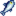

Pelican Town

Pelican Town is where the player moves to at the start of the game, located in Stardew Valley. Pelican Town is where most of the villagers live, work, and socialize.
Lewis is the mayor of Pelican Town and has been for over 20 years; he comments that he has not had competition for the role since first becoming mayor.
The northwest entrance to town connects to the Bus Stop and the Farm. The southwest passage connects to Cindersap Forest, which contains Marnie's Ranch, Leah's Cottage, and the Wizard's Tower. Directly south of town is the Beach. North of town connects to the Mountain, with Robin's Carpenter Shop, the Mines, the Adventurer's Guild, the Railroad, and the Quarry.
Initially, there are weeds located near 2 Willow Lane, in the area behind 1 Willow Lane, behind JojaMart, and to the west of the Community Center, below the playground. These weeds will die during Winter, but will respawn at the start of each new year.
When attempting to cut most trees in Pelican Town, a message will show saying "I shouldn't cut down trees in town."
Key Locations
| Image | Name | Residents |
|---|---|---|
 |
Pierre's General Store | |
 |
Clinic | |
| Community Center | ||
 |
Museum | |

|
Blacksmith | |

|
JojaMart | |
 |
The Stardrop Saloon | |
 |
Bookseller shop |
Other Residents
| Image | Name | Residents |
|---|---|---|
 |
1 River Road | |
 |
Trailer | |
 |
Mayor's Manor | |
 |
1 Willow Lane | |
 |
2 Willow Lane |
Special Orders Board
Pelican Town has a special orders board that allows you to perform quests for the various townspeople.
Trash Bear
On the first non-rainy day in Year 3, Trash Bear will appear in the southern part of Cindersap Forest. Bringing 4 requested items to Trash Bear will trigger a cutscene in which Trash Bear cleans up the trash in Cindersap Forest, and the trash in the Trailer's front yard. Dusty's dog pen also gets an upgrade.
Foraging

Forageable items found on the ground in Pelican Town are:[1]
- In Spring:
 Daffodil (100%)
Daffodil (100%) - In Summer:
 Sweet Pea (100%)
Sweet Pea (100%) - In Fall:
 Blackberry (100%)
Blackberry (100%) - In Winter:
 Crocus (54%),
Crocus (54%),  Holly (38%), and
Holly (38%), and  Crystal Fruit (8%)
Crystal Fruit (8%)
Forageable items spawn at an average rate of 1.2 per night in spring and summer; 0.9 per night in fall; and, 0.7 per night in winter.[2] The map shows the possible locations as red tiles.
Artifact Spots
Artifacts that can be found by digging up Artifact Spots at Pelican Town are:
 Rusty Spoon (4% + 6-11%[3])
Rusty Spoon (4% + 6-11%[3]) Prehistoric Rib (2.2-4%[3])
Prehistoric Rib (2.2-4%[3]) Chipped Amphora (3%)
Chipped Amphora (3%) Ancient Doll (0.8%)
Ancient Doll (0.8%) Chewing Stick (0.8%)
Chewing Stick (0.8%) Prehistoric Scapula (0.7%)
Prehistoric Scapula (0.7%) Ornamental Fan (0.6%)
Ornamental Fan (0.6%) Ancient Drum (0.4%)
Ancient Drum (0.4%) Bone Flute (0.4%)
Bone Flute (0.4%).png/24px-Strange_Doll_(green).png) Strange Doll (green) (0.07%)
Strange Doll (green) (0.07%).png/24px-Strange_Doll_(yellow).png) Strange Doll (yellow) (0.07%)
Strange Doll (yellow) (0.07%)
Other possible items are:
 Lost Book (20% + 4-8%[3]); once all Lost Books have been found, any potential Lost Book is replaced by
Lost Book (20% + 4-8%[3]); once all Lost Books have been found, any potential Lost Book is replaced by  Mixed Seeds.
Mixed Seeds.- 1-3
 Clay (12-24%[3])
Clay (12-24%[3]) - Only in Winter:
 Winter Root (21%)
Winter Root (21%) - Only in Winter:
 Snow Yam (14%)
Snow Yam (14%) - 1-3
 Copper Ore (7-14%[3])
Copper Ore (7-14%[3]) - 1-3
 Stone (4-8%[3])
Stone (4-8%[3]) - Only in Spring: 2-5
 Rice Shoots (4%)
Rice Shoots (4%) - An unseen
 Secret Note: up to 2.1% chance, only if the player has a Magnifying Glass.
Secret Note: up to 2.1% chance, only if the player has a Magnifying Glass.
Artifact spots spawn at an average rate of 0.2 per night, except in winter when the average rate increases to 0.8 per night.[4]
Fishing

River fish can be caught in the river flowing through Pelican Town. In Fall, a Legendary Fish, the Angler, can be caught at the north end of the river. Ms. Angler, one of the legendary fish II, can also be caught there.
When fishing in the fountain to the left of the Community Center, a present box containing a Decorative Trash Can (10% chance) can be found. Otherwise, a single piece of wood or stone will be caught, with equal probability (45% chance each).[5]
| Time | |||||||||||||||||||||
|---|---|---|---|---|---|---|---|---|---|---|---|---|---|---|---|---|---|---|---|---|---|
| 6 | 7 | 8 | 9 | 10 | 11 | 12 | 1 | 2 | 3 | 4 | 5 | 6 | 7 | 8 | 9 | 10 | 11 | 12 | 1 | ||
| Sunny day only | |||||||||||||||||||||
| Rainy day only | |||||||||||||||||||||
| Rainy day only | |||||||||||||||||||||
| 6 | 7 | 8 | 9 | 10 | 11 | 12 | 1 | 2 | 3 | 4 | 5 | 6 | 7 | 8 | 9 | 10 | 11 | 12 | 1 | ||
| Sunny day only | |||||||||||||||||||||
| Sunny day only | |||||||||||||||||||||
| Rainy day only | |||||||||||||||||||||
| 6 | 7 | 8 | 9 | 10 | 11 | 12 | 1 | 2 | 3 | 4 | 5 | 6 | 7 | 8 | 9 | 10 | 11 | 12 | 1 | ||
|  Salmon | |||||||||||||||||||||
| Rainy day only | |||||||||||||||||||||
| Rainy day only | |||||||||||||||||||||
| Rainy day only | |||||||||||||||||||||
| 6 | 7 | 8 | 9 | 10 | 11 | 12 | 1 | 2 | 3 | 4 | 5 | 6 | 7 | 8 | 9 | 10 | 11 | 12 | 1 | ||
Secrets
- If a Super Cucumber is placed in the hidden brown box located in the fenced area north of the Blacksmith, the player will receive the secret ??HMTGF?? statue.
- One Prize Ticket can be found in a hidden gift box to the northeast of the Bookseller, in a small fenced area blocked by a large stump.
- The Alleyway Buffet can be obtained from a hidden golden garbage can in the easternmost region of town, by entering a concealed opening in the eastern fence just north of the Minecart track outside of the Blacksmith. The path is blocked by a large log and boulder.
Trivia
- Pelican Town is located within the Ferngill Republic, at war with the Gotoro Empire across the Gem Sea.[6]
- Dr. Harvey, in calling out on his shortwave radio, identifies his location (in Pelican Town) as 52 north, 43.5 east. Thus, if Stardew Valley is on Earth, it can be found near a village called Krasnoye (one of many such) in Russia - about 160 km (100 mi) WNW of Saratov, and about 600 km (375 mi) SE of Moscow. "Krasnoye" means "beautiful" or "red". However, it is not on a sea shore.
- The player cannot refill their watering can from the fountain.
References
- For each forage item, the provided percentage is the average percentage of all forage items that will be the specified item for that season. The input data is Locations.xnb, which is processed by code in GameLocation::spawnObjects.
- Of the 13200 total tiles in Pelican Town, 870 (7%) are valid spawn locations for standard forage items. For more information on forage item spawning, see Foraging.
- 3.0 3.1 3.2 3.3 3.4 3.5 The chance of finding extra items in Artifact Spots in season-dependent. The maximum chance is in summer and fall. In winter, the chance is 50% less; in spring it is 6% less. See Artifact Spot for more information.
- Of the 13200 total tiles in Pelican Town, 891 (7%) are valid spawn locations for artifact spots in spring, summer, and fall. 3036 (23%) are valid spawn locations in winter. See Artifact Spot for more information.
- See StardewValley.Locations.Town::getFish in the game code.
- Twitter link: https://twitter.com/ConcernedApe/status/697468899881652224
Archive link: https://archive.ph/m9D0D
History
- 1.4: Introduced Trash Bear. Debris now respawns each Spring 1.
- 1.6: Added Bookseller to key locations. Added hidden containers with Prize Ticket and The Alleyway Buffet. Now prevents the player from cutting down most trees in town.